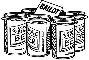
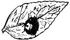
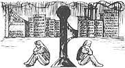

SOUTHERN-FRIED HIGHWAYS?
A truck rolling down Interstate 75 last December lost a small part of its load near Crossville, Tennessee. The unlabeled canister contained radioactive material that posed a "very serious danger" to anyone who might pick it up. Fortunately, the missing cargo was found . . . but only after a 12-hour search by authorities who combed 200 miles of blacktop with ultrasensitive radiation detectors.
UNCLE SAM SWAPS
In years to come, the Department of Defense may barter for goods for the nation's defensive stockpile. Government officials are reviewing current policies in an effort to determine whether swapping for the necessary commodities might help make up for the deficit in funds specifically appropriated for the task. Unfortunately, about the only thing the feds have to barter with is land, often publicly owned. Would you trade a piece of Yellowstone for a Jeep?
BLESSING OR BLIGHT?
While Florida, Louisiana, and Texas spend more than $11 million a year to curb the spread of the prolific water hyacinth, San Diego has invested $3.5 million to cultivate the plant for waste-water treatment. This South American native can double its bulk in a couple of weeks, choking waterways and threatening native species . . . but the plant also thrives on nitrates, phosphates, and potassium, all of which are common water pollutants.
THE WIDENING GYRE
On the appropriate technology front, underwater explorer Jacques Cousteau has designed a new, wind-powered vessel to replace the aging Calypso. The Moulin à Vent (French for windmill) operates with a revolutionary 44-foot cylinder that serves as a mast and deflects wind to propel the ship. Four to five times more efficient than sail, the cylinder allows the Moulin à Vent to stand still or even to back up - unlike a conventional sailboat. Although 50-knot winds tore the mast from the deck of the vessel in an October Caribbean storm, Cousteau plans a transatlantic run this September.
LYNX LIES LOW
Suburban life often seems to agree with raccoon, skunk, and even deer - but wildcats? A missing lynx, stolen from the Sacramento Zoo last September, was recently found alive and well and living in a suburban garage in the California capital. The family that owns the home has no idea how the cat got there, and police have no leads on who took the animal from the zoo in the first place.
NIX ON NEW-CAR SMELL
That evocative fragrance of plastic given off by new cars may soon belong to the realm of nostalgia if the EPA decides to ban the most commonly used chemical plasticizer, DEHP. Plasticizers emit the characteristic newcar odor and give plastic materials their flexibility. Unfortunately, some of them - notably DEHP - also cause cancer in rats and mice, according to the National Cancer Institute. Incidentally, most human exposure to DEHP actually occurs from eating foods that absorbed the chemical during processing or from packaging material. Hamburger and prepared meats are a couple of such sources.
ELECTORAL ENTREPRENEURS
He may never have told a lie, but George Washington did ply Virginia voters with rum punch, wine, and beer during the House of Burgesses election in 1757. Following in the tradition of the father of our country, the Political Action Committees (PAC's) of the 1980's will offer much more to American legislators. PAC's are groups of people interested in influencing our Representatives and Senators in certain ways, and their leverage is purchased: The anti-PAC organization Common Cause estimates that PAC's contributed $80 million to congressional candidates in 1982. From 1974 to 1982, the number of PAC's grew from 608 to more than 3,400. We have Bacpac, Peacepac, and Cigarpac. And beer distributors have a committee called - what else?-SixPac.
ODOROUS AWARD
Is the smell of rotten eggs near the top of the "world's most offensive odor" list? Some Louisiana farmers think so, and they're backing thought with action by spraying their soybean fields with a diluted egg mixture. It seems that the wafting stench of overripe eggs keeps deer from nibbling on the tender young soybean plants.
MUFFINS, MUFFINS, WHO'S GOT THE MUFFINS?
EPA investigators recently found 775 parts per billion (ppb) of EDE in cornmeal mix taken off the shelf of a Florida grocery store. EDB - or ethylene dibromide - is a pesticide that the EPA has described as the most powerful cancer-causing compound they've ever tested. Florida law prohibits the sale of food products containing more than one ppb of EDB. William Ruckleshaus, director of the EPA, has instituted a partial ban on EDB - with more studies to follow.
ILL-REPUTE FIELD
Eastern Oregon residents recently petitioned the government to restore Naughty Girl Meadow's original name. Once called Whorehouse Meadow in honor of ladies who camped there during the sheepshearing season, the meadow was renamed in the 1960's by a traveling surveyor who thought the original too racy. Locals believe that Whorehouse Meadow captures the "color" of the area. A decision should be coming from the U.S. Board on Geographical Names soon.
LADYBUG, LADYBUG
In the late 1880's, the West Coast's fledgling citrus industry faced disaster. The cottony-cushion scale, an Australian pest, had found its way to the Golden State and was threatening to suck the life from California's citrus trees. Entomologists soon discovered, however, that the scale wasn't a problem in its native land, thanks to the Australian ladybird beetle, which fed voraciously on the pest. The importation of ladybugs was an instant success, with offspring of the first insect immigrants selling for as much as $2.00 per beetle!
The biological control of insects can be used at home to fight many common house and garden pests. "Biological Pest Management for Interior Plantscapes" - which is available for $2.00 from the Alberta Environmental Center, Vegreville, Alberta, Canada T0B 4L0 - describes how to control certain whiteflies, aphids, mealybugs, scales, and mites by releasing beneficial insects (such as green lacewing larvae and ladybugs).
CHEMICAL WARFARE
In Berlin, the big news is the air pollution coming over the wall that divides the city, according to The Amicus Journal . The East Germans are sending over carcinogenic fumes from brown coal and chemicals, and exhaust from two-stroke automobile engines. On bad days, the West Berlin government frequently is forced to declare smog alerts and to urge young children and asthmatics to stay inside.
Although the worst environmental conditions appear to be in East Germany and Poland, the Soviet Union is beginning to acknowledge that it, too, has problems. Siberia's Lake Baikal, which contains one of the world's largest supplies of fresh water, is now protected. But other regions of Siberia are supposedly so badly polluted as a result of the Russian industrialization program that people are refusing to live there.
FARMER STOPS NUKE
A 43-year-old farmer has managed to halt the construction of a nuclear power plant near her home in the Regensburg, West Germany region, making her the first person to single-handedly stop the building of a nuke in that country. Franziska Beck filed suit in a West German court, charging that her basic rights were violated by the construction of the reactor. The court decided, among other things, that the public hadn't been allowed to participate sufficiently in the licensing process. The plant's contractors will, of course, appeal the decision.
1983 RETROSPECTIVE
Last year's drought was one of the worst in recorded history, with once-productive land turning to desert all over the planet. Natural scientists are pegging some of the blame for desertification on human activity. Poor cultivation practices, deforestation, overgrazing, and the overuse of marginal land are all being cited as causes of the problem. But on the positive side, reports from United Nations groups indicate that some 3.24 billion trees were planted in 14 countries during the UN's "For Every Child a Tree" program. Let's hope we can keep that effort going!
EDITOR'S NOTE: The worldwide organization called Friends of the Earth is one of the most effective environmental groups in existence today, and the activities of FOE - along with a broad range of other news concerning ecological developments - are described each month in its publication titled Not Man Apart . You can become a member of Friends of the Earth, and receive the excellent tabloid, by sending $25 ($100 for sponsor, $1,000 for life, $12 student/low income)-or $15 for a subscription only-to FOE, 1045 Sansome St., San Francisco, CA 94111.
|
|
|
|
|
 |
|
 |
|
 |
|
|